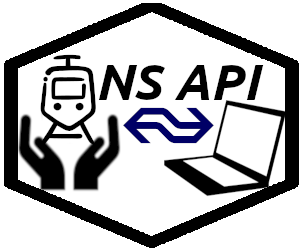

The Dutch National Railway service (NS; Nederlandse Spoorwegen) has an API where we can query for travel advise, see the current trains on a given station, see if there is any delays or work on the tracks and NS also provides a list with geolocation of all the stations.
The goal of nsapi is to make it easy to gather data from the NS API. The package returns data frames for every response.

an incredibly ugly logo for this package, we need a hexsticker!
Installation
You can NOT YET install the released version of nsapi from CRAN with:
But you can install the development version from GitHub with:
Example
This is a basic example which shows you how you get travel information:
treinplanner <- get_travel_advise(
fromStation = "Leiden Centraal",
toStation = "Utrecht Centraal",
departure = TRUE,
yearCard = TRUE,
previousAdvises = 1,
nextAdvises = 1)
treinplanner
#> Melding AantalOverstappen GeplandeReisTijd ActueleReisTijd
#> 1 NA 0 0:42 0:42
#> 2 NULL 1 0:56 0:56
#> 3 NA 0 0:42 0:42
#> 4 NA 1 0:56 0:56
#> VertrekVertraging AankomstVertraging Optimaal GeplandeVertrekTijd
#> 1 <NA> <NA> FALSE 2018-08-04 09:22:00
#> 2 <NA> <NA> FALSE 2018-08-04 09:23:00
#> 3 <NA> <NA> TRUE 2018-08-04 09:52:00
#> 4 <NA> <NA> FALSE 2018-08-04 09:53:00
#> ActueleVertrekTijd GeplandeAankomstTijd ActueleAankomstTijd
#> 1 2018-08-04 09:22:00 2018-08-04 10:04:00 2018-08-04 10:04:00
#> 2 2018-08-04 09:23:00 2018-08-04 10:19:00 2018-08-04 10:19:00
#> 3 2018-08-04 09:52:00 2018-08-04 10:34:00 2018-08-04 10:34:00
#> 4 2018-08-04 09:53:00 2018-08-04 10:49:00 2018-08-04 10:49:00
#> Status ReisDeel
#> 1 VOLGENS-PLAN NS, Inte....
#> 2 NIET-MOGELIJK c("NS", ....
#> 3 VOLGENS-PLAN NS, Inte....
#> 4 VOLGENS-PLAN c("NS", ....FAQ
- What Can I do with the package?
- You can access the departures from a station, disruptions (planned and unplanned), get travel advise (between stations) and a list of all stations (in the Netherlands and some outside.). In the vignette I’ve described how to use the functions.
- I’m getting a curl timeout!
- Yes… That happens, a lot. The NS website does not return errors but just times you out once in a while. Take a deep breath, retry.
- Error Bad request or HTTP 400
- Your username and password might not be set properly
- How do I set a password and username?
- See Authentication in the vignette